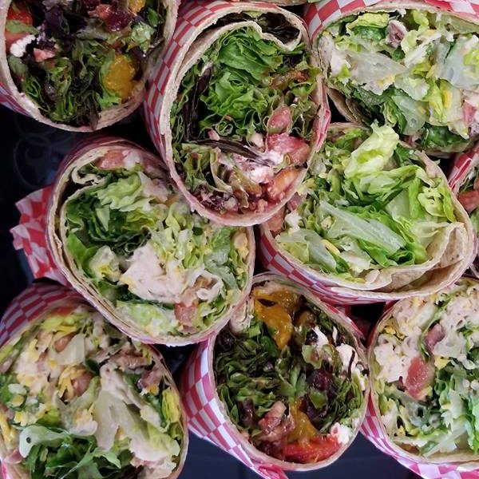
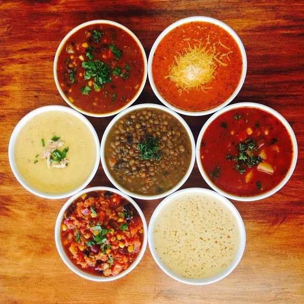

✮ Specialities ✮

Salads and Wraps
Greens and Grains offers a wide variety of fresh salads that can also be made into wraps. Additionally, salads can be customized from a base of romaine, spinach of spring mix with a wide range of vegetable and protein ingredients suited to any palatte.

Soups and Sandwiches
Greens and Grains Cafe also offers a variety of sandwiches made on locally baked breads and a wide range of soups made in house from locally sourced ingredients. Come check them out! You won't be disappointed.

Catering Services
Have a group or office staff you would like to provide meals for? We love to cater for events, large and small! Let us know your needs we would love to cater your next event.